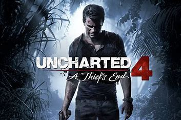
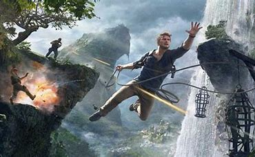
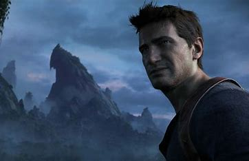

Uncharted
Uncharted è una serie di videogiochi action-adventure sviluppati da Naughty Dog e pubblicati da Sony a partire dal 2007 per le console PlayStation.Al 2024 la serie conta quattro capitoli principali (Uncharted: Drake's Fortune, Uncharted 2: Il covo dei ladri, Uncharted 3: L'inganno di Drake e Uncharted 4: Fine di un ladro) e due spin-off (Uncharted: L'abisso d'oro e Uncharted: L'eredità perduta).



STORIA
La storia comincia con il recupero del diario di Francis Drake, che porta Nate, la giornalista Elena Fisher e il mentore Victor "Sully" Sullivan in cerca del tesoro perduto di El Dorado. L’avventura si svolge su un’isola tropicale piena di rovine, enigmi antichi e pericolosi nemici, tra cui mercenari guidati da Gabriel Roman e Atoq Navarro. Man mano che la spedizione avanza, si scopre che El Dorado non è una città d’oro, ma una statua maledetta che trasforma gli uomini in mostri. Nathan dovrà affrontare nemici umani e creature mutanti per impedire che la maledizione si diffonda. Alla fine, il tesoro viene distrutto e l’isola abbandonata. Il gioco è un mix di azione, avventura ed esplorazione, con una forte attenzione ai personaggi e al ritmo cinematografico. Uncharted ha segnato l’inizio di una delle saghe più popolari nel mondo dei videogiochi.
pagina iniziale